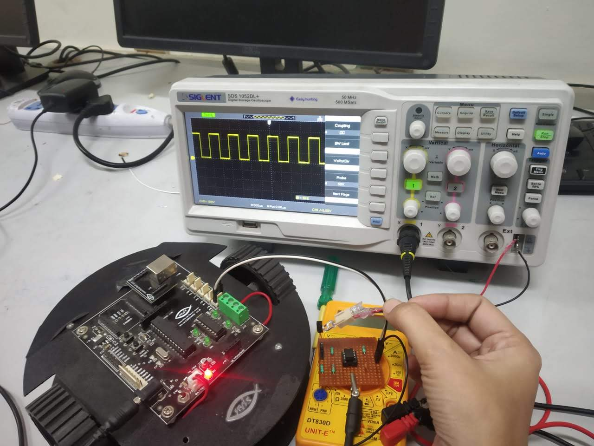

2019 PROJECT RECORDING
Robot demonstration
Archived footage from the line-follower project.
BACHELOR'S PROJECT / 2019
I worked through the complete build: circuit and PCB design, soldering, infrared sensor tests, programming, robot assembly and track testing.

01 / MY CONTRIBUTION
This was a hands-on undergraduate project. I designed the circuit layouts, soldered and assembled the boards, tested the infrared sensing electronics, wrote and uploaded the control program, assembled the robot and tested it on a line-following track.
02 / ELECTRONICS
The circuit work combines infrared emission and reception with signal conditioning. I used bench measurements to check the pulses and sensor output before relying on them in the moving robot.
03 / ROBOT TEST
Archived footage from the line-follower project.
04 / WHAT I LEARNED
The important engineering lesson was that a robot's behavior depends on every stage working together: clean sensor signals, reliable wiring, correct logic, motor response and repeatable testing. The oscilloscope and PCB records show the troubleshooting work behind the finished demonstration.